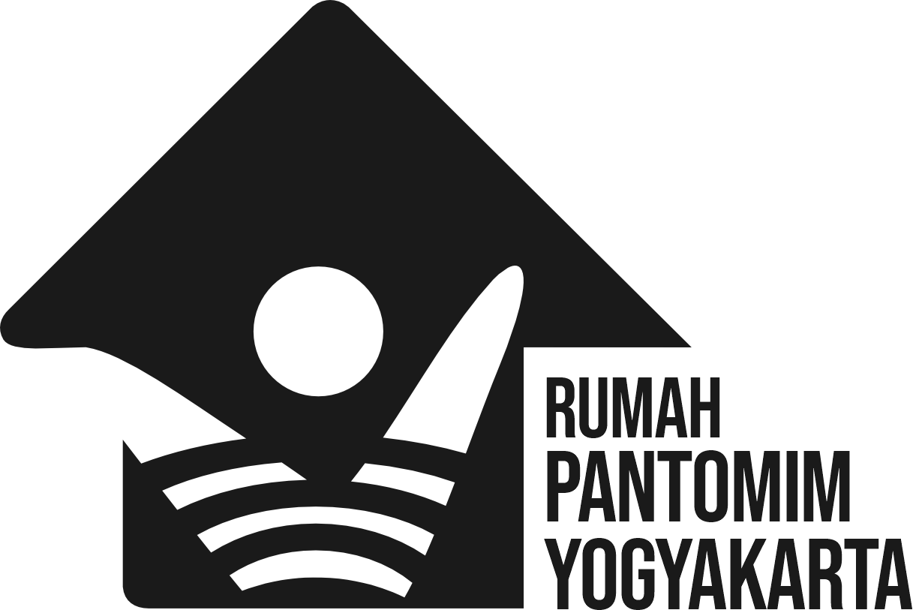

Yogyakarta, 2026 — Kelompok seni Rumah Pantomim Yogyakarta akan secara resmi mengumumkan transformasinya menjadi Yayasan Rumah Pantomim Yogyakarta melalui sebuah peristiwa artistik bertajuk Parade Pertunjukan Pantomim “Sowan” 2026. Acara ini menjadi penanda perjalanan baru Rumah Pantomim Yogyakarta dalam memperkuat peran, keberlanjutan, dan kontribusinya bagi ekosistem seni pantomim di Indonesia.
Parade “Sowan” dipilih bukan sekadar sebagai tajuk acara, melainkan sebagai sikap kultural. Dalam tradisi Jawa, sowan dimaknai sebagai tindakan menghadap, menyapa, dan sikap merendah— sebuah gestur penghormatan kepada sesama, kepada ruang, kepada sejarah, dan kepada masa depan.
Melalui parade pertunjukan pantomim ini, Yayasan Rumah Pantomim Yogyakarta “menyowan” kepada publik, seniman, komunitas, serta kota Yogyakarta yang selama ini menjadi rumah tumbuhnya praktik dan pemikiran mereka.
Acara ini akan menghadirkan rangkaian kegiatan pantomim, di antaranya workshop pantomim bagi masyarakat—baik anak-anak maupun dewasa—yang akan dilaksanakan pada 26–28 Januari 2026 di Kelas Pagi Yogyakarta.
Rangkaian kegiatan ditutup dengan acara utama Parade Pertunjukan Pantomim “Sowan” pada 31 Januari 2026, pukul 15.00–22.00 WIB, bertempat di IFI-LIP Yogyakarta. Parade akan menghadirkan berbagai seniman dan kelompok, baik internal maupun jejaring Rumah Pantomim Yogyakarta, dengan format karya tunggal dari masing-masing penampil.
Peresmian menjadi yayasan menandai komitmen Rumah Pantomim Yogyakarta untuk:
“Transformasi ini bukan tentang perubahan nama semata, melainkan tentang tanggung jawab yang lebih luas terhadap ekosistem seni dan pengetahuan. Melalui ‘Sowan’, kami ingin memulai langkah ini dengan sikap hormat dan keterbukaan.”
Parade Pertunjukan Pantomim “Sowan” 2026 diharapkan menjadi tonggak penting, tidak hanya bagi Yayasan Rumah Pantomim Yogyakarta, tetapi juga bagi perkembangan seni pantomim di Yogyakarta dan Indonesia secara umum.